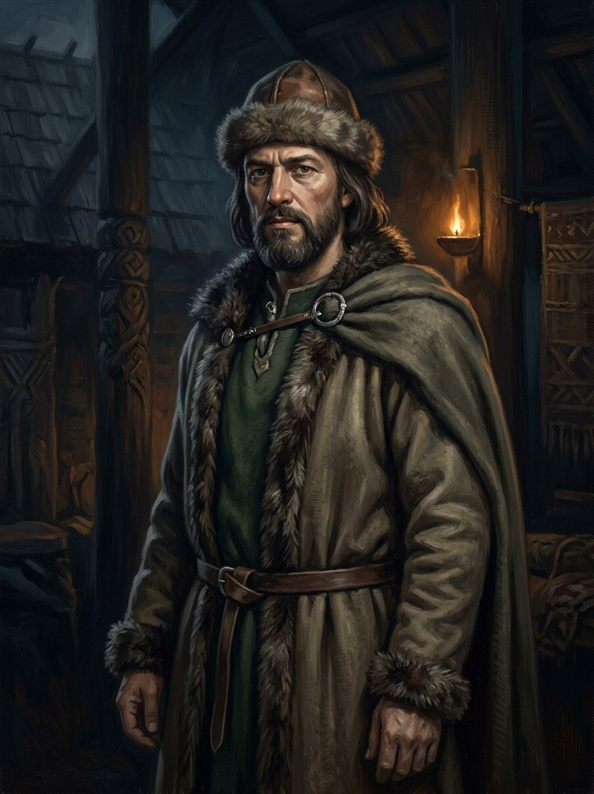

Gediminas¶
Summary¶
Gediminas (c. 1275 - winter 1341/42) is the founder-figure of the dynasty, the Grand Duke who made Vilnius a capital and gave his name to the house of the Gediminids. He never speaks in the main books; he is the father of Algirdas and Kęstutis, the author of the Iron Wolf dream, and the man whose pyre opens the prequel (Book VI ch. 1). His legacy is a realm that was too large for one heir and a bloodline bound to a pact he did not live to hear.
Gediminas

Gediminas · character¶
Tipas |
veikėjas |
Metai |
c. 1275–1341 |
Status |
Istoriniai duomenys |
Pastaba |
Grand Duke of Lithuania (1316–1341), founder of the Gediminid dynasty and builder of Vilnius; died in 1341, before his sons swore the November 1345 Silent Pact. |
Appearance & tells¶
Gediminas is seen only in memory and legend. In the prequel he burns on his pyre with his horse and hounds (Book VI ch. 1); the boy Kęstutis remembers him through the Krivis’s account of the Iron Wolf dream rather than through any portrait. The saga gives him no features. His signs are objects: the grey skull of the dream-wolf that he ordered carried to the Dykra (1323), and the unanswerable authority of a name that every later Gediminid claims.
Want · Need · Lie · Truth¶
Want (external) |
A realm that could not be swallowed by the Order, and a capital on the hill where the Neris meets the Vilnia. |
Need (internal) |
To leave a succession that would hold (he chose Jaunutis; the family broke it in 1345). |
Lie they believe |
That a wolf and a dynasty can share one legend without the wolf’s hundred voices tearing at each other. |
Truth they learn (or refuse) |
The Krivis’s half of the dream, which Lizdeika never told him: the wolf is collared, and its hundred voices are its own sons (Book VI ch. 1). |
Arc by book¶
Book VI: opens the prequel at his pyre (winter 1341/42, ch. 1); his chosen heir Jaunutis is deposed in 1345 (ch. 2-3); the Pact of ch. 4 is sworn by his sons in his absence; he lingers in the Iron Wolf’s skull (ch. 5) and in the first Amber Debt (ch. 8).
Book I: the founder whose name the cousins carry (ch. 7, 12, 29).
Books II-V: invoked as the dream behind the iron wolf, the Gediminid blood that wolves may never shed (Book III ch. 15; Book V ch. 5, 13).
Power & magic¶
No tier: in the saga’s system he is a man of the Middle World with a legend attached. The magic is retrospective: the Iron Wolf dream (Šventaragis hunt, 1323) produces the relic, the Iron Wolf’s skull, by which the Iron Wolves later swear. His blood is the blood the Pact forbids his descendants to shed („no Gediminid blood“). He himself is not bound, because the Pact is sworn four years after he dies.
Record vs saga¶
[Historical record]: Grand Duke of Lithuania c. 1315/16-1341 (born c. 1275, died probably in December 1341; the pyre is sometimes dated 1342). His letters of 1323 to Pope John XXII and the Hanseatic towns offered settlement and mention Vilnius as his seat; he fought the Order for a quarter-century, married his daughter Aldona to the future Casimir III of Poland (1325) and built an alliance web of Ruthenian and Polish marriages. The circumstances of his death are unrecorded or disputed (Order chroniclers tell of a death at the siege of Bayerburg/Veliuona). The Iron Wolf dream and Lizdeika are first told in the 16th-century Bychowiec Chronicle. See VLE.
[The saga’s invention]: The Iron Wolf’s skull found where the dream-wolf stood (1323); the Krivis’s lost second half of the dream; the funeral pyre of Book VI ch. 1. Whether Gediminas had one wife or several is disputed in the record, and the saga stays neutral.
Tarimas¶
ge-DI-mi-nas (/ɡʲɛˈdʲɪmʲɪnɐs/), English respelling geh-DIH-mih-nahs. Genitive Gedimino, dative Gediminui.
Appearances¶
Book VI: ch. 1 (his pyre), 3, 4, 5, 6, 8, 13, 15, 23, 26, 29 and the afterword. Book I: ch. 7, 12, 29. Book II: ch. 5, 7, 9, 21. Book III: ch. 8, 9, 15, 18, 20. Book IV: ch. 22, 23. Book V: ch. 5, 8, 11, 13, 18, 20, 21, 22, 24, 28. In the later books he appears only as an ancestor or a name („the Gediminid’s blood“).
Sąsajos¶
graph LR
algirdas["Algirdas"]
gediminaiciai["Gediminaičiai (House of Gediminas)"]
gediminas["Gediminas"]
kestutis["Kęstutis"]
wolf_skull["Geležinio Vilko kaukolė"]
gediminas -->|Parent of| algirdas
gediminas -->|Parent of| kestutis
gediminas -->|Member of| gediminaiciai
wolf_skull -->|Created by| gediminas
style gediminas stroke-width:3px